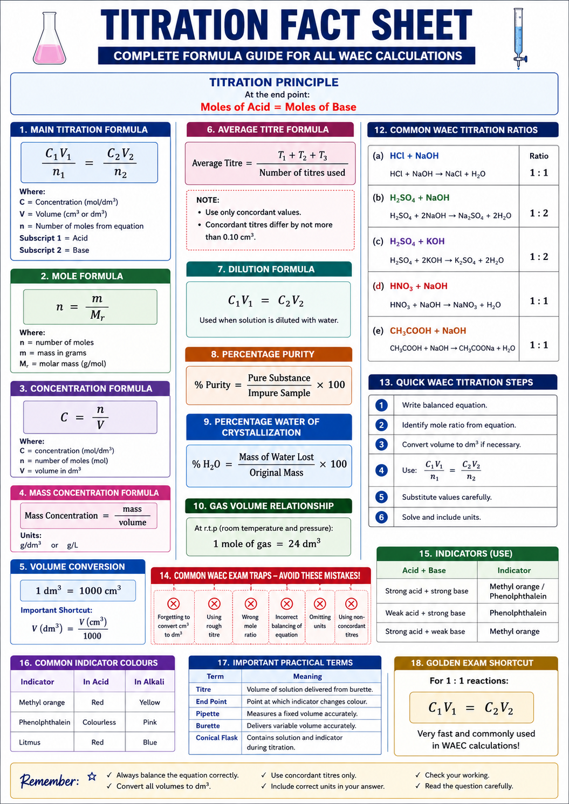
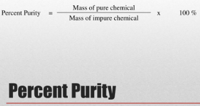

1. Final Quantitative Analysis Mindset
At WAEC level, quantitative analysis is not only about titration. It is about proving that you can measure accurately, record neatly, calculate logically and explain the chemistry behind the values obtained.

Accurate Recording
Record initial and final burette readings to two decimal places. Use only concordant titres.

Mole Ratio First
Every titration calculation begins with the balanced equation and mole ratio.

Examiner Style
WAEC rewards method, units, correct substitution, significant figures and final answer.
2. Model Paper 1 — Strong Acid vs Strong Alkali
Question
A is dilute tetraoxosulphate(VI) acid, \(H_2SO_4\). B is sodium hydroxide solution containing \(4.0g\,dm^{-3}\) of NaOH. \(25.0cm^3\) of B was titrated against A using phenolphthalein indicator.
| Titration | Rough | 1st | 2nd | 3rd |
|---|---|---|---|---|
| Final burette reading / cm³ | 12.40 | 12.15 | 12.10 | 12.15 |
| Initial burette reading / cm³ | 0.00 | 0.00 | 0.00 | 0.00 |
| Volume of A used / cm³ | 12.40 | 12.15 | 12.10 | 12.15 |
- Calculate the average titre.
- Calculate concentration of B in \(mol\,dm^{-3}\).
- Calculate concentration of A in \(mol\,dm^{-3}\).
- Calculate mass concentration of A in \(g\,dm^{-3}\).
- Calculate moles of \(H^+\) in the average titre.
Teacher
This is the exact type of calculation that can appear in WAEC. The secret is to respect the mole ratio \(1:2\).
3. Model Paper 2 — Methyl Orange Variant
Question
A is dilute \(H_2SO_4\). B is \(0.100mol\,dm^{-3}\) NaOH solution. \(20.0cm^3\) of B was pipetted into a conical flask and titrated with A using methyl orange indicator.
| Titration | Rough | 1st | 2nd | 3rd |
|---|---|---|---|---|
| Final reading / cm³ | 10.20 | 9.80 | 9.75 | 9.80 |
| Initial reading / cm³ | 0.00 | 0.00 | 0.00 | 0.00 |
| Titre / cm³ | 10.20 | 9.80 | 9.75 | 9.80 |
- Calculate the average titre.
- Calculate the concentration of A.
- Calculate the mass concentration of A.
- State the colour change of methyl orange.
Teacher
The lower titre occurs because only \(20.0cm^3\) of NaOH was used instead of \(25.0cm^3\). Always connect titre size to volume used.
4. Hard Calculation Masterclass
Task A: Find Mass in a Given Volume
If \(A=0.103mol\,dm^{-3}\) \(H_2SO_4\), calculate the mass of \(H_2SO_4\) in \(250cm^3\) of A.
Task B: Find Volume Needed for Neutralization
Calculate the volume of \(0.103mol\,dm^{-3}\) \(H_2SO_4\) needed to neutralize \(20.0cm^3\) of \(0.100mol\,dm^{-3}\) NaOH.
Task C: Calculate Percentage Error
A student obtained \(12.50cm^3\) instead of the correct \(12.13cm^3\). Calculate percentage error.
Teacher
WAEC may not always stop at concentration. You should be ready for mass, volume, percentage error and moles of ions. The same data can generate many questions.
Student
Sir, why do we divide cm³ by 1000?
Teacher
Because concentration in \(mol\,dm^{-3}\) works with volume in \(dm^3\). Since \(1000cm^3=1dm^3\), divide by 1000.
5. Result Analysis and Graphical Reasoning
Although WAEC chemistry titration usually relies on tables, students must understand how repeated readings show accuracy. Closely grouped titres show good technique.
| Student | Concordant Titres / cm³ | Comment |
|---|---|---|
| A | 12.15, 12.10, 12.15 | Excellent concordance |
| B | 12.10, 12.70, 13.20 | Poor technique; likely endpoint error |
| C | 11.90, 12.00, 12.05 | Close, but may have stopped slightly early |
 Teacher guide: Read the bottom of the meniscus at eye level and record to two decimal places. Good titre values cluster closely; poor titres scatter widely.
Teacher guide: Read the bottom of the meniscus at eye level and record to two decimal places. Good titre values cluster closely; poor titres scatter widely.
6. Advanced Errors and Their Effects
| Error | Effect on Titre | Effect on Calculated Acid Concentration |
|---|---|---|
| Overshooting endpoint | Too high | Calculated acid concentration becomes too low |
| Stopping before endpoint | Too low | Calculated acid concentration becomes too high |
| Burette contains water before adding acid | May require larger titre | Acid appears less concentrated |
| Pipette contains water before measuring alkali | May require smaller titre | Acid appears more concentrated |
| Air bubble in burette jet | Unreliable; often too high | Acid concentration may be underestimated |
| Reading top of meniscus instead of bottom | Wrong reading | Wrong concentration |
Teacher
If titre is too high, your formula often makes the calculated acid concentration lower because the same amount of alkali appears to need more acid volume.
Student
Sir, which is worse: wrong endpoint or wrong mole ratio?
Teacher
Wrong mole ratio is more dangerous because it affects every later calculation. Endpoint error affects the titre, but wrong ratio destroys the chemistry.
7. Final Quantitative Analysis Exam-Ready Summary
Step 1
Write the balanced chemical equation.
Step 2
Extract the mole ratio correctly.
Step 3
Calculate average titre using only concordant titres.
Step 4
Convert g dm⁻³ to mol dm⁻³ where necessary.
Step 5
Substitute carefully and attach units.
Step 6
Check whether your answer is chemically reasonable.